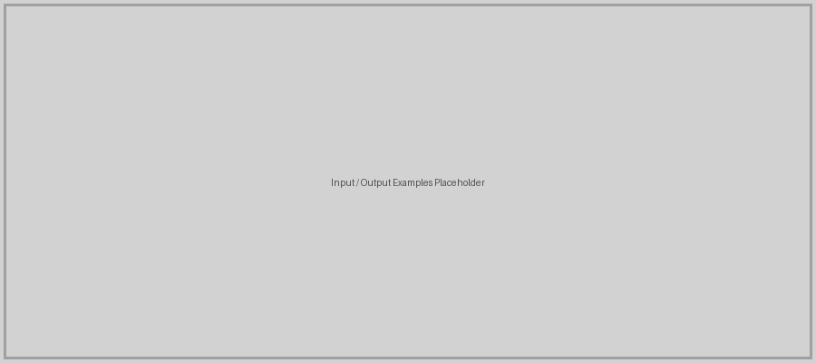
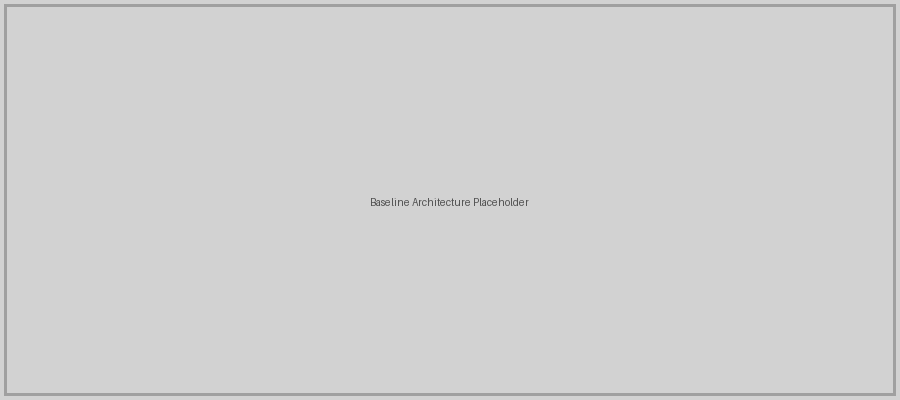
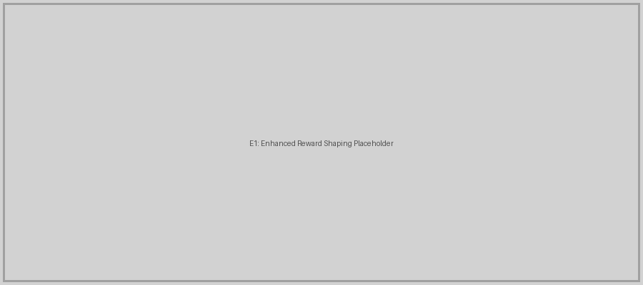
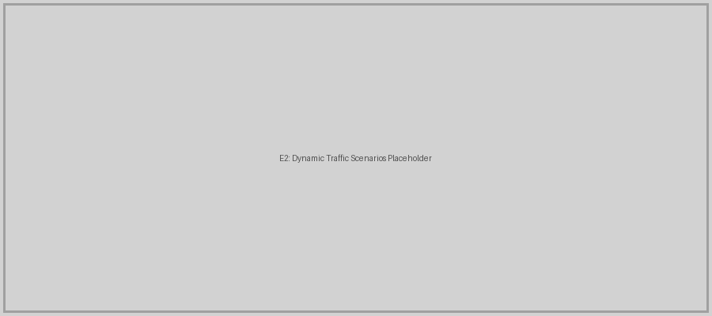
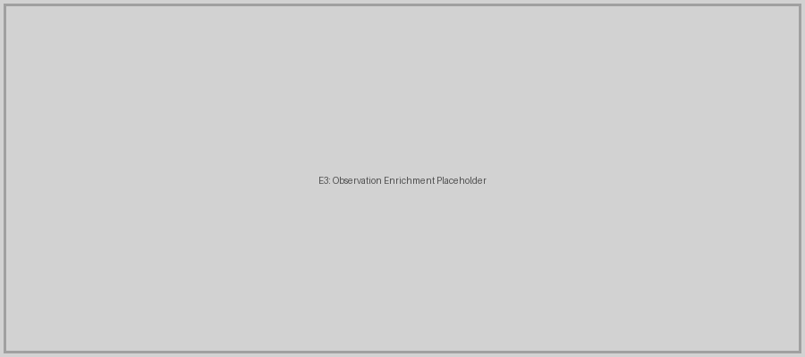
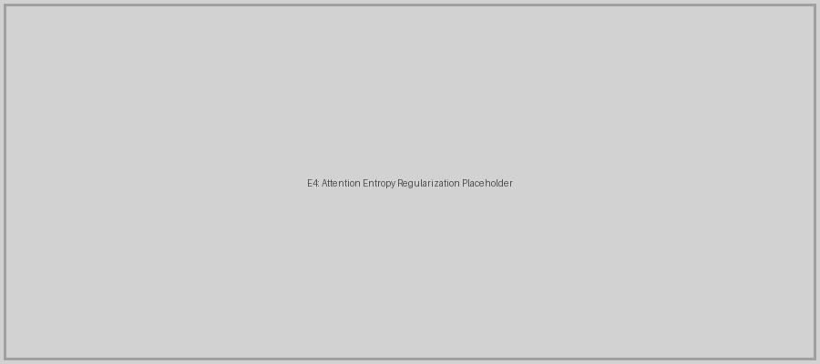

Autonomous driving has emerged as one of the most transformative technologies in artificial intelligence. Despite significant progress, autonomous highway driving remains a challenging problem requiring vehicles to make continuous real-time decisions — when to accelerate, decelerate, or change lanes — in a dynamic environment with other moving vehicles, while avoiding collisions and maintaining efficient travel speed.
In this project, we train an autonomous driving agent to navigate a multi-lane highway using Deep Reinforcement Learning. The agent learns entirely through trial and error by interacting with a simulated highway environment, receiving rewards for desirable behavior such as maintaining high speed and avoiding collisions, and penalties for undesirable behavior such as crashing or driving too slowly.
We use highway-env, a lightweight open-source simulation environment for autonomous driving. The agent operates on a 3-lane highway populated with 15 surrounding vehicles. At each timestep, the agent receives a Kinematics observation: a matrix of 10 vehicles × 7 features [presence, x, y, vx, vy, cos_h, sin_h], normalized relative to the ego vehicle. The action space is discrete with 5 actions: LANE_LEFT, IDLE, LANE_RIGHT, FASTER, SLOWER.
The agent receives a 10×7 observation matrix representing the ego vehicle and 9 surrounding vehicles. Each row contains the vehicle's presence flag, lateral position (x), longitudinal position (y), lateral velocity (vx), longitudinal velocity (vy), and heading (cos_h, sin_h). Values are normalized relative to the ego vehicle.
Based on this observation, the agent outputs one of 5 discrete actions: LANE_LEFT, IDLE, LANE_RIGHT, FASTER, or SLOWER. For example, given a slow vehicle directly ahead, the agent may output LANE_RIGHT with 87% confidence to overtake safely.

State-of-the-art DRL approaches for autonomous highway driving include:
We selected PPO (Proximal Policy Optimization) with an Ego-Attention (Transformer) policy as our baseline, sourced from the Farama-Foundation HighwayEnv repository. The model uses a custom feature extractor (EgoAttentionNetwork) that embeds each vehicle into a 64-dimensional space, then applies a multi-head attention mechanism (2 heads, 32 features per head) where the ego vehicle queries all surrounding vehicles. The attended output is combined with the ego embedding via a residual connection and passed to PPO's policy and value heads.

We propose four targeted enhancements to the baseline PPO + Ego-Attention agent, each addressing a specific limitation identified during analysis.
The baseline reward function only delivers strong signals at critical moments such as collisions. We augmented it with near-miss penalties using Time-to-Collision (TTC) metrics, smooth driving rewards to encourage gradual acceleration, and lane-centering rewards to incentivize staying centered in the lane.

The baseline uses a fixed density of 15 vehicles. We introduced variable traffic conditions: sparse (5–10 vehicles), moderate (15–20 vehicles), and dense (25–30 vehicles), with dynamic events such as sudden braking and aggressive lane changes sampled randomly during training.

We expanded the per-vehicle observation from 7 to 10 features by adding pre-computed safety-relevant features: Time-to-Collision (TTC), lateral distance (lat_dist), and lane change in progress (lc_in_progress). This gives the attention mechanism more semantically meaningful inputs.

We added an auxiliary entropy penalty to the PPO training objective to regularize the ego-attention weights, discouraging both over-concentration (attending to a single vehicle exclusively) and over-diffusion (uniform attention regardless of relevance). This encourages the network to maintain structured, selective attention patterns throughout training.

We ran an ablation study comparing all enhancements individually and in combination against the baseline. Key findings:
Details related to training and implementation:
The ablation study demonstrated that targeted, single-objective enhancements outperform combined approaches in DRL for autonomous driving. E4 (Attention Entropy Regularization) was the strongest enhancement, producing more structured attention patterns and better driving behavior. Key lessons learned: reward design is critical and small changes cause drastic behavioral shifts; combining enhancements requires careful conflict analysis; and regularizing the attention mechanism improves both performance and interpretability. Future work includes testing on more complex environments (roundabouts, intersections) and combining E3+E4 with a carefully tuned joint reward function.